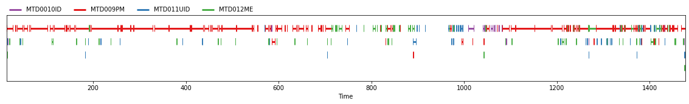
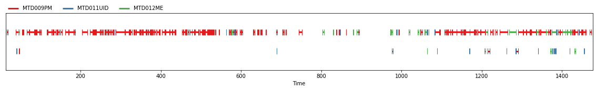
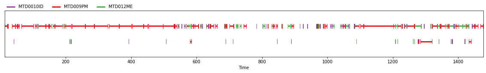

!pip install -qq pyannote.audio==2.1.1
!pip install -qq richpyannote.audio is an open-source toolkit written in Python for speaker diarization.
Version 2.1 introduces a major overhaul of the default speaker diarization pipeline, made of three main stages: speaker segmentation applied to a short sliding window, neural speaker embedding of each (local) speakers, and (global) agglomerative clustering.
Despite its decent out-of-the-box performance, the default pipeline may suffer from the domain mismatch problem (common to most machine learning models) and not perform well on your own data. This blog post will guide you through two recipes to adapt it to your own data and (hopefully) get better performance. Depending on the number and duration of labeled conversations, you may either focus on optimizing hyper-parameters or additionally fine-tune the internal speaker segmentation model.
Installation
Let’s start by installing pyannote.audio 2.1.1 (and rich for pretty progress bars).
Data preparation
First things first: we need data… Annotated data! Ideally, lots of annotated data!
For the purpose of this blog post, we will rely on the AMI-SDM (single distance microphone) corpus.
# download AMI-SDM mini corpus
%cd /content/
!git clone https://github.com/pyannote/AMI-diarization-setup
%cd /content/AMI-diarization-setup/pyannote/
!bash download_ami_sdm_mini.sh!PYANNOTE_DATABASE_CONFIG="/content/AMI-diarization-setup/pyannote/database.yml" pyannote-database info AMI-SDM.SpeakerDiarization.minitrain
28 files
8h46m annotated
6h11m of speech (71%)
112 speakers
development
3 files
0h56m annotated
0h40m of speech (72%)
12 speakers
test
3 files
0h56m annotated
0h39m of speech (70%)
12 speakersNote that we use a “mini” version of AMI-SDM so that the code in this blog post can be run in half an hour but the full version is also available for you to get better results.
If you want to try it, replace download_ami_sdm_mini.sh by download_ami_sdm.sh and AMI-SDM.SpeakerDiarization.mini by AMI-SDM.SpeakerDiarization.only_words and you are good to go!
from pyannote.database import registry, FileFinder
registry.load_database("/content/AMI-diarization-setup/pyannote/database.yml")
dataset = registry.get_protocol(
"AMI-SDM.SpeakerDiarization.mini",
{"audio": FileFinder()}
)Pretrained pipeline
Let’s start by running the pretrained pipeline on the test set and evaluate its performance.
Official pyannote.audio pipelines (i.e. those under the pyannote organization umbrella) are open-source, but gated. It means that you have to first accept users conditions on their respective Huggingface page to access the pretrained weights and hyper-parameters.
To load the speaker diarization pipeline used in this blog post, you have to
- visit hf.co/pyannote/speaker-diarization and accept the terms
- visit hf.co/pyannote/segmentation (used internally by the speaker diarization pipeline)and accept the terms
- log in using
notebook_login
from huggingface_hub import notebook_login
notebook_login()from pyannote.audio import Pipeline
pretrained_pipeline = Pipeline.from_pretrained(
"pyannote/speaker-diarization", use_auth_token=True) # this takes approximately 2min to run on Google Colab GPU
from pyannote.metrics.diarization import DiarizationErrorRate
metric = DiarizationErrorRate()
for file in dataset.test():
# apply pretrained pipeline
file["pretrained pipeline"] = pretrained_pipeline(file)
# evaluate its performance
metric(file["annotation"], file["pretrained pipeline"], uem=file["annotated"])
print(f"The pretrained pipeline reaches a Diarization Error Rate (DER) of {100 * abs(metric):.1f}% on {dataset.name} test set.")The pretrained pipeline reaches a Diarization Error Rate (DER) of 32.5% on AMI-SDM.SpeakerDiarization.mini test set.file["annotation"]
file["pretrained pipeline"]
Fine-tuning the segmentation model
When a sufficiently large training set of labeled conversations is available, fine-tuning the internal speaker segmentation model may lead to significant performance boost.
Starting from the pretrained model…
from pyannote.audio import Model
model = Model.from_pretrained("pyannote/segmentation", use_auth_token=True)… we prepare it for fine-tuning on the training dataset:
from pyannote.audio.tasks import Segmentation
task = Segmentation(
dataset,
duration=model.specifications.duration,
max_num_speakers=len(model.specifications.classes),
batch_size=32,
num_workers=2,
loss="bce",
vad_loss="bce")
model.task = task
model.setup(stage="fit")The actual training is done with lightning:
# this takes approximately 15min to run on Google Colab GPU
from types import MethodType
from torch.optim import Adam
from pytorch_lightning.callbacks import (
EarlyStopping,
ModelCheckpoint,
RichProgressBar,
)
# we use Adam optimizer with 1e-4 learning rate
def configure_optimizers(self):
return Adam(self.parameters(), lr=1e-4)
model.configure_optimizers = MethodType(configure_optimizers, model)
# we monitor diarization error rate on the validation set
# and use to keep the best checkpoint and stop early
monitor, direction = task.val_monitor
checkpoint = ModelCheckpoint(
monitor=monitor,
mode=direction,
save_top_k=1,
every_n_epochs=1,
save_last=False,
save_weights_only=False,
filename="{epoch}",
verbose=False,
)
early_stopping = EarlyStopping(
monitor=monitor,
mode=direction,
min_delta=0.0,
patience=10,
strict=True,
verbose=False,
)
callbacks = [RichProgressBar(), checkpoint, early_stopping]
# we train for at most 20 epochs (might be shorter in case of early stopping)
from pytorch_lightning import Trainer
trainer = Trainer(accelerator="gpu",
callbacks=callbacks,
max_epochs=20,
gradient_clip_val=0.5)
trainer.fit(model)# save path to the best checkpoint for later use
finetuned_model = checkpoint.best_model_pathOptimizing the pipeline hyper-parameters
The pretrained pyannote/speaker-diarization pipeline relies on its own set of hyper-parameters adapted to the internal pyannote/segmentation pretrained model:
pretrained_hyperparameters = pretrained_pipeline.parameters(instantiated=True)
pretrained_hyperparameters{'segmentation': {'min_duration_off': 0.5817029604921046,
'threshold': 0.4442333667381752},
'clustering': {'method': 'centroid',
'min_cluster_size': 15,
'threshold': 0.7153814381597874}}There is no reason the above hyper-parameters are optimal for the newly finetuned speaker segmentation model. Let’s optimize them:
segmentation.threshold(\(\theta\) in the technical report, between 0 and 1) controls the aggressiveness of speaker activity detection (i.e. a higher value will result in less detected speech);clustering.threshold(\(\delta\) in the report, between 0 and 2) controls the number of speakers (i.e. a higher value will result in less speakers).segmentation.min_duration_off(\(\Delta\) in the report, in seconds) controls whether intra-speaker pauses are filled. This usually depends on the downstream application so it is better to first force it to zero (i.e. never fill intra-speaker pauses) during optimization.clustering.centroidis the linkage used by the agglomerative clustering step.centroidhas been found to be slightly better thanaverage.clustering.min_cluster_sizecontrols what to do with small speaker clusters. Clusters smaller than that are assigned to the most similar large cluster.15is a good default value.
We start by optimizing segmentation.threshold by assuming that the subsequent clustering step is perfect (cf. OracleClustering).
# this takes approximately 5min to run on Google Colab GPU
from pyannote.audio.pipelines import SpeakerDiarization
from pyannote.pipeline import Optimizer
pipeline = SpeakerDiarization(
segmentation=finetuned_model,
clustering="OracleClustering",
)
# as reported in the technical report, min_duration_off can safely be set to 0.0
pipeline.freeze({"segmentation": {"min_duration_off": 0.0}})
optimizer = Optimizer(pipeline)
dev_set = list(dataset.development())
iterations = optimizer.tune_iter(dev_set, show_progress=False)
best_loss = 1.0
for i, iteration in enumerate(iterations):
print(f"Best segmentation threshold so far: {iteration['params']['segmentation']['threshold']}")
if i > 20: break # 50 iterations should give slightly better resultsThen, we use the optimized value of segmentation.threshold and optimize clustering.threshold.
best_segmentation_threshold = optimizer.best_params["segmentation"]["threshold"]# this takes approximately 5min to run on Google Colab GPU
pipeline = SpeakerDiarization(
segmentation=finetuned_model,
embedding=pretrained_pipeline.embedding,
embedding_exclude_overlap=pretrained_pipeline.embedding_exclude_overlap,
clustering=pretrained_pipeline.klustering,
)
pipeline.freeze({
"segmentation": {
"threshold": best_segmentation_threshold,
"min_duration_off": 0.0,
},
"clustering": {
"method": "centroid",
"min_cluster_size": 15,
},
})
optimizer = Optimizer(pipeline)
iterations = optimizer.tune_iter(dev_set, show_progress=False)
best_loss = 1.0
for i, iteration in enumerate(iterations):
print(f"Best clustering threshold so far: {iteration['params']['clustering']['threshold']}")
if i > 20: break # 50 iterations should give slightly better resultsFinally, we use the optimized values of segmentation.threshold and clustering.threshold to evaluate the performance of the finetuned pipeline:
best_clustering_threshold = optimizer.best_params['clustering']['threshold']# this takes approximately 2min to run on Google Colab GPU
finetuned_pipeline = SpeakerDiarization(
segmentation=finetuned_model,
embedding=pretrained_pipeline.embedding,
embedding_exclude_overlap=pretrained_pipeline.embedding_exclude_overlap,
clustering=pretrained_pipeline.klustering,
)
finetuned_pipeline.instantiate({
"segmentation": {
"threshold": best_segmentation_threshold,
"min_duration_off": 0.0,
},
"clustering": {
"method": "centroid",
"min_cluster_size": 15,
"threshold": best_clustering_threshold,
},
})
metric = DiarizationErrorRate()
for file in dataset.test():
# apply finetuned pipeline
file["finetuned pipeline"] = finetuned_pipeline(file)
# evaluate its performance
metric(file["annotation"], file["finetuned pipeline"], uem=file["annotated"])
print(f"The finetuned pipeline reaches a Diarization Error Rate (DER) of {100 * abs(metric):.1f}% on {dataset.name} test set.")The finetuned pipeline reaches a Diarization Error Rate (DER) of 26.6% on AMI-SDM.SpeakerDiarization.mini test set.file["finetuned pipeline"]
file["annotation"]Conclusion
In just about half an hour (and 6 hours of training data), we managed to reduce the diarization error rate from 32.5% to 26.6%.
Yours truly used this very recipe for their submissions to several speaker diarization benchmarks organized in 2022. I reached:
- 6th place at VoxSRC 2022 speaker diarization challenge
- 1st place at Ego4D 2022 audio-only speaker diarization challenge
- 1st place at Albayzin 2022 speaker diarization challenge
The technical report contains a detailed description of the pipeline, as well as an extensive evaluation of its performance on multiple benchmarking datasets.
For technical questions and bug reports, please check pyannote.audio Github repository so that my (or anyone’s) public answer benefits other people as well.
I also offer scientific consulting services around speaker diarization (and speech processing in general), please contact me if you think this type of technology might help your business/startup!